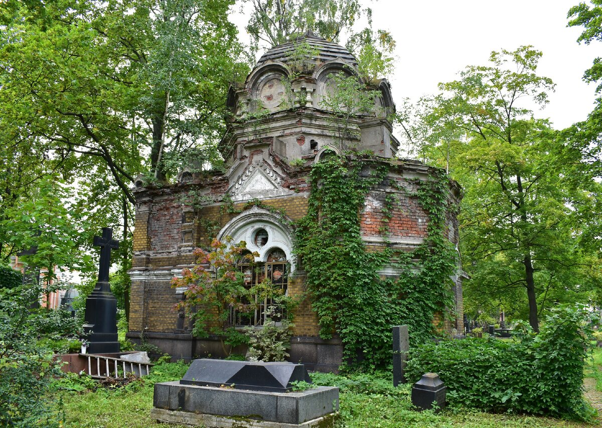
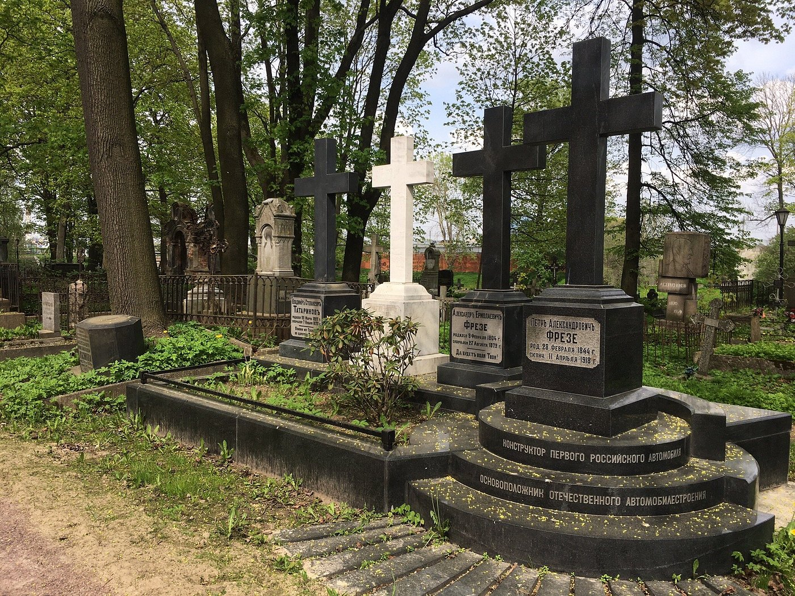
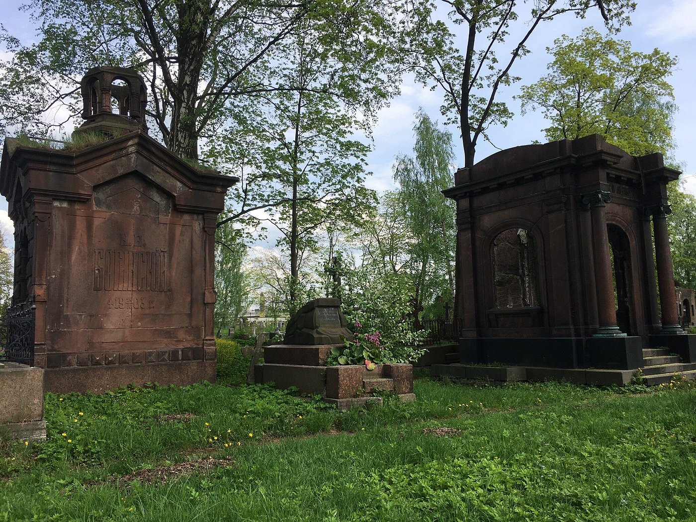
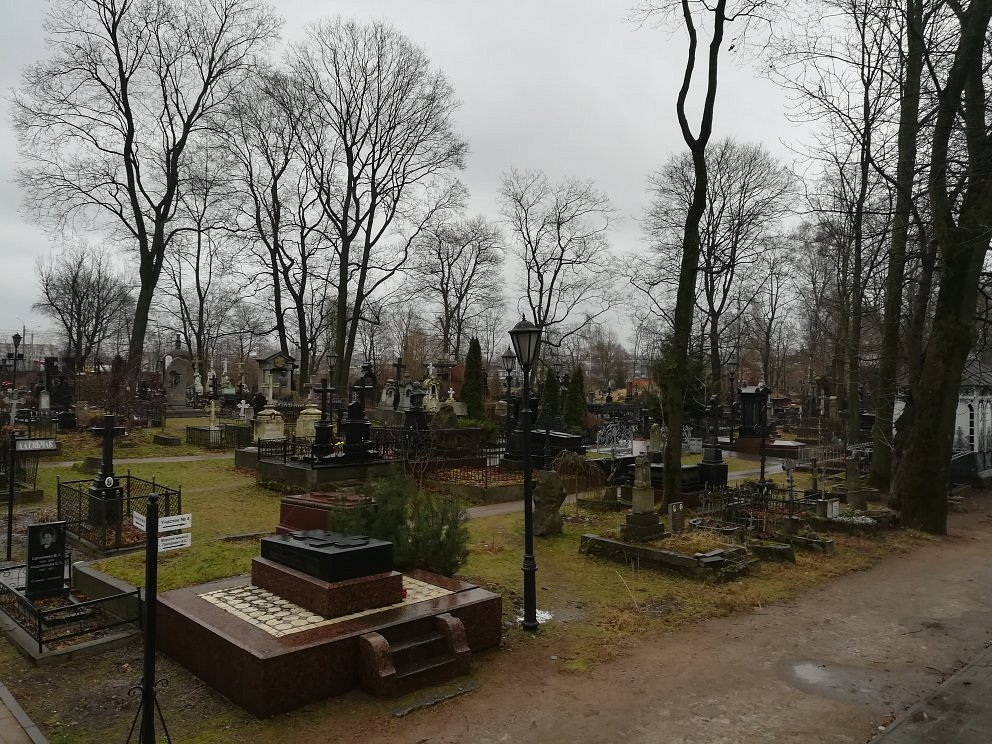

Никольское кладбище

Легенда
Никольское кладбище считается одним из самых жутких некрополей Петербурга. В 1970-х годах здесь жил монах-чернокнижник Прокопий. Он готовил лекарства из костей умерших, варил снадобья с трупным ядом и лечил ими тех, кому посчитает нужным. У него была связь с нечистью, поэтому его методы помогали там, где бессильна была официальная медицина.

Однажды ночью к Прокопию явился сам Сатана и предложил сделку: душу монаха в обмен на эликсир истинного бессмертия. Условие ритуала было чудовищным: в ночь на Пасху привязать грешницу на кладбище к кресту, вырезать ей язык, выколоть глаза, а кровь собрать в ритуальный кубок. Прокопий выполнил всё: 666 раз проклял Бога и до рассвета пил кровь. Но солнце взошло слишком быстро и ритуал остался незавершённым.

Утром прохожие нашли два трупа: убитую девушку на кресте и рядом с ней самого монаха. Очевидцы рассказывали, что его правая нога превратилась в кошачью лапу. После этого на кладбище стали замечать огромного чёрного кота с седой бородой. Он кидается на людей, перегрызает шеи и словно высасывает из жертв жизненную силу. Призрак Прокопия в облике кота до сих пор бродит между могил в поисках новых жертв, а особенно опасен он в полнолуние.
Что было на самом деле
Никольское кладбище было основано в 1863 году как третий некрополь Александро-Невской лавры. Своё название получило в честь церкви Николая Мирликийского, построенной в 1871 году на средства купца Русанова (под храмом до сих пор находится семейная усыпальница). Кладбище действительно выглядит запущенным — многие склепы и надгробия XIX — начала XX века находятся в руинированном состоянии, что создаёт атмосферу заброшенной старины.

Никакого монаха Прокопия в официальных документах кладбища не существует. А легенда о чёрном коте и кровожадном чернокнижнике — типичная городская страшилка, кочующая по российским некрополям (аналогичные истории рассказывают о Малоохтинском и других кладбищах). На самом деле здесь похоронены реальные исторические личности: учёный Лев Гумилёв (сын Анны Ахматовой), скульптор Михаил Микешин (автор памятника «Тысячелетие России»), архитектор цирка на Фонтанке Василий Кенель, лётчики Лев Мациевич и Всеволод Абрамович, журналист Алексей Суворин, политики Иван Толстой, Анатолий Собчак и Галина Старовойтова, а также знаменитые врачи Николай Симановский и Фёдор Углов. Запущенность кладбища объясняется не мистикой, а недостатком финансирования на реставрацию.
← Назад к карте